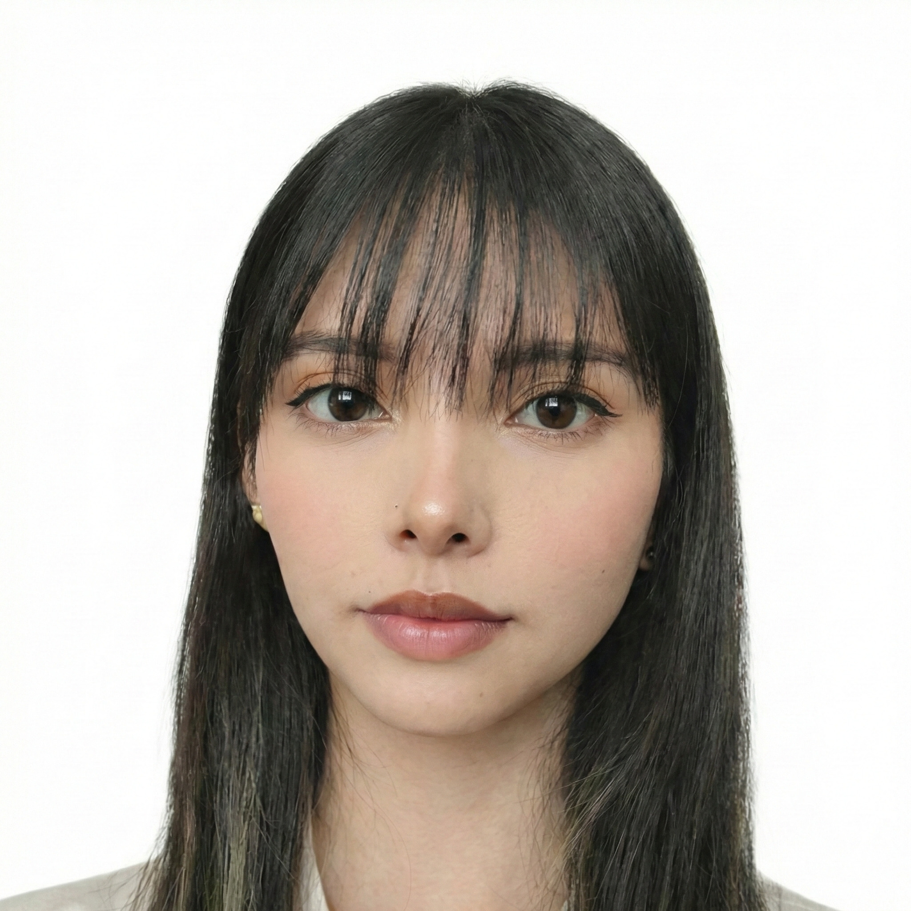

Nuestra Identidad
Conoce las bases que fundamentan nuestro estudio, el origen de nuestra marca y la estructura de talento enfocada en el diseño regenerativo.
De dónde venimos
El nombre Renova se selecciona por su potencia semántica y su raíz latina renovare. En el contexto del ecodiseño, no solo implica "hacer algo nuevo", sino restaurar el valor de lo que se consideraba residuo.
NUESTRO ISOTIPO, R3, ALUDE A LAS TRES ERRES DE LA CONCIENCIA ECOLÓGICA.
Estructura Empresarial
Shamuel Woodcock
Responsable de la visión macro de la empresa y del concepto creativo. Define las líneas de diseño, supervisa la coherencia entre la estética y la funcionalidad, y toma las decisiones finales sobre el rumbo comercial.
El puente entre la creatividad técnica y la viabilidad del modelo de negocio, garantizando que el ecodiseño sea el ADN del producto.
Jhonny Acosta
Encargado de la gestión técnica ambiental. Supervisa la selección de materiales de bajo impacto, analiza la trazabilidad de la cadena de suministro y asegura que los procesos de producción minimicen el desperdicio (Zero Waste).
Garantiza el rigor científico del proyecto, evitando el "greenwashing" y asegurando el cumplimiento de indicadores reales de sostenibilidad.

Juanita Mora
Responsable de la identidad visual, el estilismo y la comunicación de la marca. Actúa como la imagen oficial para personificar los valores de Renova, definiendo cómo se presentan las prendas y su interacción con las tendencias.
Conecta el producto final con el consumidor a través de una narrativa visual potente, demostrando que la moda ética es estética y deseable.